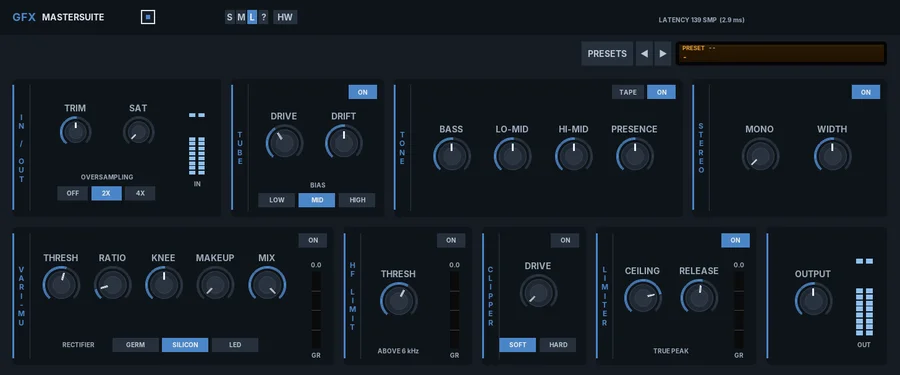
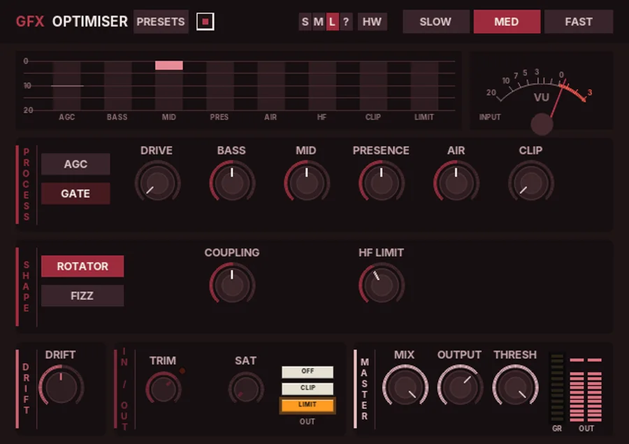
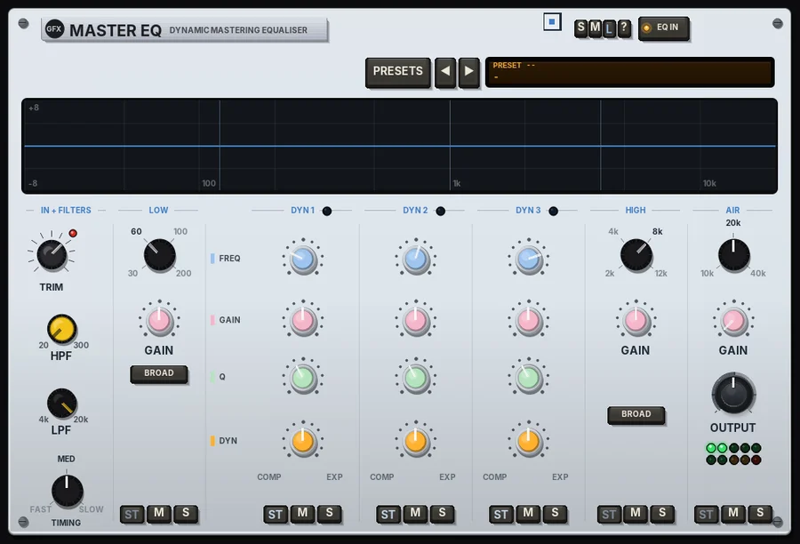
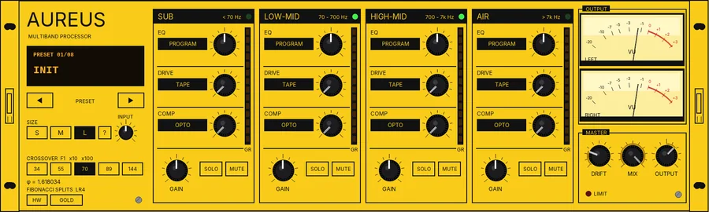
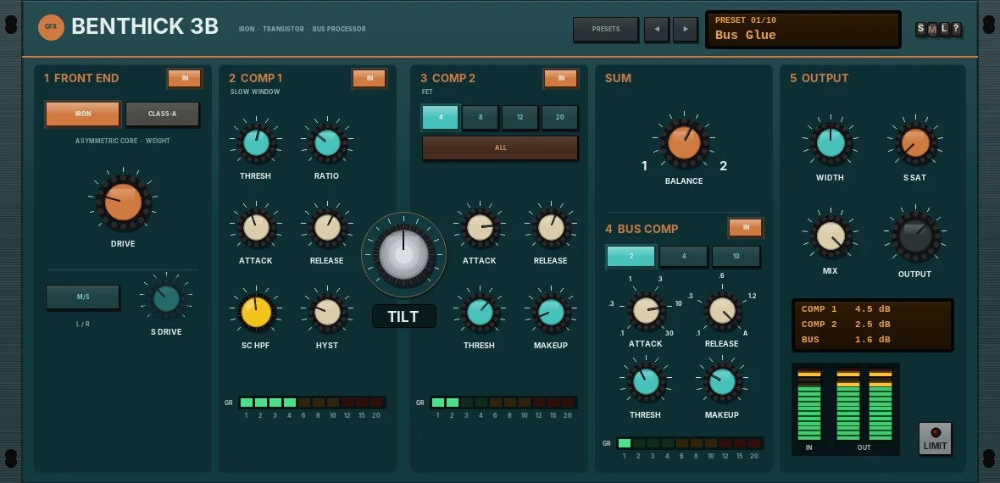
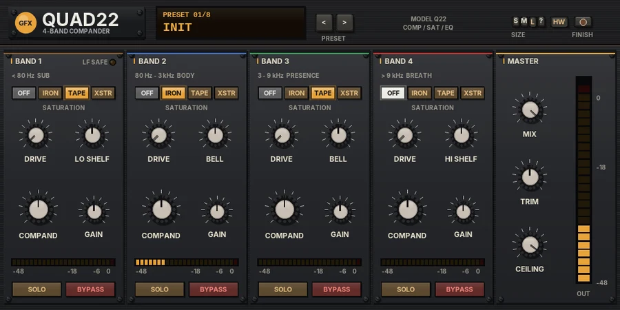

Mastering at a glance
Finishing tools for the stereo mix: a mastering strip, a loudness chain and a dynamic EQ. Click a plug-in for its panel; each one has its manual PDF and a download.
| Plug-in | In the spirit of | Main features | Best for |
|---|---|---|---|
 MasterSuitePanel | Modular mastering strips |
| A complete mastering chain |
 OptimiserPanel | Broadcast loudness processors |
| Loud, consistent finished mixes |
 Master EQPanel | Mastering EQs with dynamic bands |
| Final tonal balance that reacts to the music |
 AureusPanel | Golden-ratio multiband processing |
| Bus and master glue with colour |
 Benthick 3BPanel | Solid-state iron and transistor bus processor |
| Tight, dense bus and master glue |
 Quad22Panel | Studio noise-reduction companders |
| Bus colour and density |